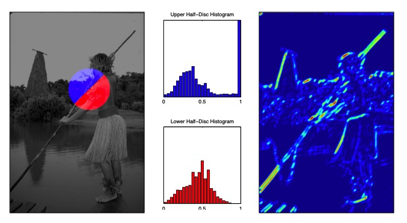
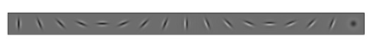
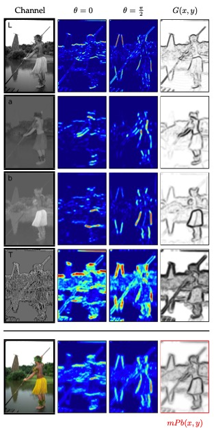
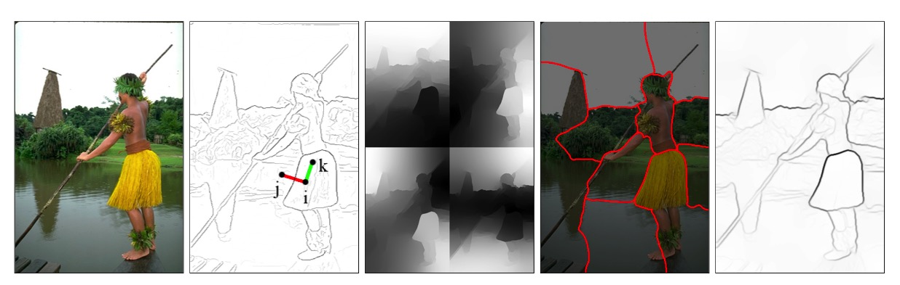
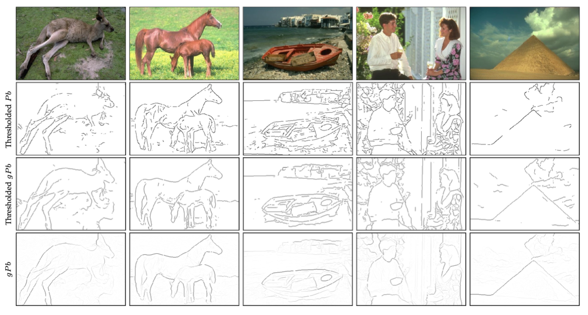
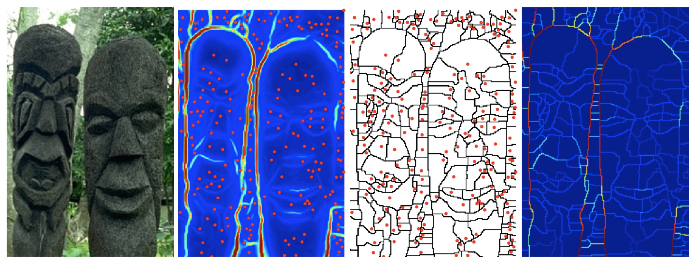
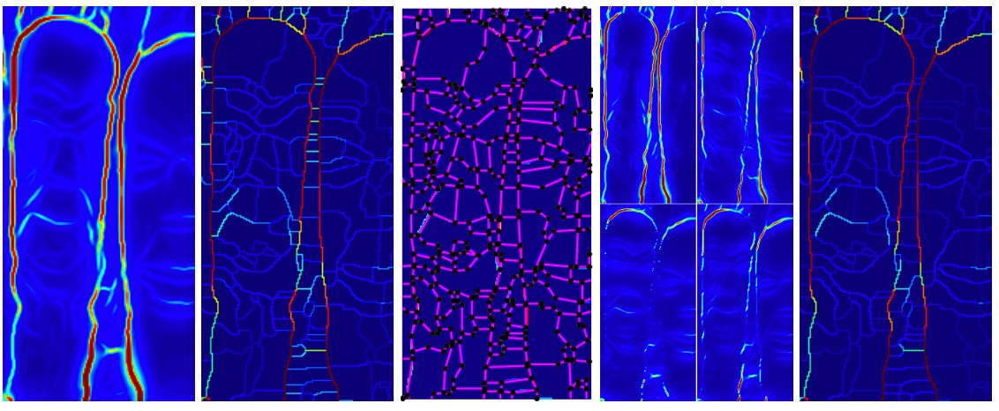
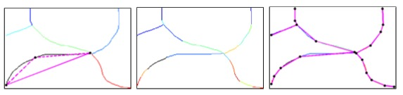
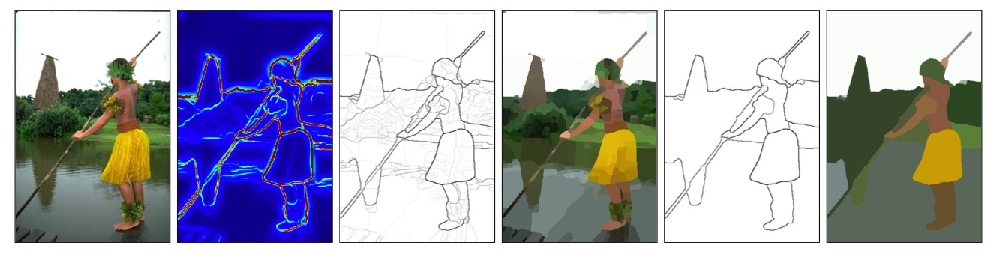
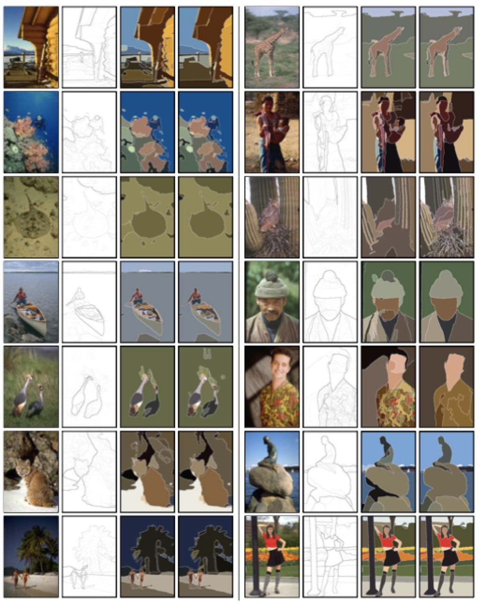

[toc]
本文介绍了Contour Detection and Hierarchical Image Segmentation这篇论文的主要思路。
1. Intro
这篇文章介绍了边缘检测和图像分割统一的方法，贡献有：
- 结合了局部和全局信息的高性能的边缘检测器
- 在不丢失边缘的质量的情况下将边缘信号转化为层级信息
- 广泛的定量评估并且提出了一个新的有标签的数据集
边缘检测和分割的相关性很大，但又不完全一样。总的来说，边缘检测不保证能够产生封闭的边缘，因此也就未必能够将图像划分成不同的区域。
2. 边缘检测
通过比较局部图像的亮度，颜色以及纹理通道的差别，Martin等人定义了$Pb(x, y, \theta)$ 来预测一个角度为$\theta$的在像素点$(x,y)$的边缘的后验概率。在这部分，作者回顾了这些线索，并提出了他们自己的多尺度的$Pb$检测器，描述了他们运行在这个探测器上新的全局化方法。
2.1 亮度，颜色，纹理梯度
$Pb$ 检测器的basic building block 是从强度图像$I$中计算得到的定向梯度信号$G(x,y,\theta)$。该计算通过在$(x,y)$位置放置圆盘，以角度$\theta$沿直径分割成两个半圆盘来进行。对于每个半圆盘，对其覆盖的像素的强度值建立直方图。$(x,y)$处的梯度幅值根据两个半圆盘直方图$g$和$h$之间的$\chi^2$距离来定义：
$$
\chi^2(g,h) = \frac{1}{2} \sum_i \frac{(g(i)-h(i))^2}{g(i)+h(i)}
$$
然后应用二阶最小二乘平滑滤波（Savitzky-Golay）来增强局部最大值并在与$\theta$正交的方向上平滑多个检测峰值。

图4.直方图的定向梯度。为了便于说明，选取了较大的圆盘（半径为50像素）
该计算的动机是边缘对应图像的不连续性，直方图提供了用于对图像区域进行建模的鲁棒机制。强的方向梯度相应意味着像素可能位于两个不同区域的边界上。
$Pb$检测器从输入图像的变换中获得方向梯度信号，组成四个单独的特征通道。前三个对应CIE Lab颜色空间的通道，称其为亮度，颜色a，颜色b通道。对于灰度图，亮度通道就是图像本身，所以不使用颜色通道。
第四个通道是纹理通道，给每个像素分配一个纹理基元id。先将图像转化为灰度图，然后用一个包含16个高斯导数滤波器和1个中心环绕滤波器的集合来与它卷积。

图5.创建纹理基元的滤波器。作者使用了8个偶数和8个奇数对称的高斯导数滤波器和一个中心环绕滤波器。
每个像素点都与一个17维的响应向量关联，然后对这些向量使用K-means聚类。聚类的中心被赋予一个纹理基元id，所以每个像素根据其最近的类被分配一个$[1,K]$范围的id。实验显示$K$取32就足够了。
图6中左列，从顶部开始的第四个面板就是依据纹理得到的图像。在此图像上，用和亮度、颜色通道相同的方式计算定向梯度。

图6.多尺度$Pb$。右下方的红色边框显示了多尺度边缘检测器的最终输出$mPb$
2.2 多尺度结合
现在介绍作者使用的$Pb$检测器的多尺度扩展。为了检测精细和粗糙结构，作者考虑三个尺度的梯度:$[\sigma/2, \sigma, 2\sigma]$，用于每个亮度，颜色和纹理通道。对于亮度通道，使用$\sigma=5$的像素。对于颜色和纹理，使用$\sigma=10$的像素。然后将这些局部线索线性组合成一个多尺度信号：
$$
mPb(x,y,\theta)=\sum_s \sum_i \alpha_{i,s} G_{i,\sigma(i,s)}(x,y,\theta)
$$
其中$s$表示尺度index，$i$表示特征通道index(亮度，颜色a，颜色b和纹理)。$G_{i, \sigma(i,s)}(x,y,\theta)$ 度量通道$i$中以$(x,y)$为中心，半径为$\sigma(i,s)$，沿角度为$\theta$切割成两个半圆盘之间直方图差异。$\alpha_{i,s}$是每个定向梯度的权重。作者将区间$[0, \pi]$分成8等分取样$\theta$，取$\theta$对应的最大的那个$mPb(x,y,\theta)$作为每个像素的边界强度的度量。
$$
mPb(x,y)=\max_{\theta}{mPb(x,y,\theta)}
$$
作者使用训练图像和相应的ground-truth，在F-measure上通过梯度上升学习权重$\alpha_{i,s}$
2.3 全局化
谱聚类是作者全局机制的核心，作者使用从谱划分中获得的特征向量。
作为谱聚类的输入，作者使用intervening contour构建了一个稀疏对称的关联矩阵$W$（通过沿着一条线上连接的两个像素的$mPb$的最大值来得到）。在固定的的半径$r$内，连接像素点$i$和$j$：
$$
W_{ij} = exp\left(-\max_{p \in \overline{ij}} \{mPb(p) \}/\rho \right)
$$
其中$\overline{ij}$是连接$i$和$j$的线段，$\rho$是一个常数。作者使用$r=5$像素，$\rho=0.1$
为了引入全局信息，作者定义 $ D_{ii}=\sum_{i} W_{ij}$并求解 $(D-W)\bold{v}=\lambda D \bold{v}$ 广义特征向量$\{\bold{v_0},\bold{v_1},…,\bold{v_n} \}$，其对应$n+1$个最小特征值 $0=\lambda_0 \leq \lambda_1 \leq … \leq \lambda_n$。图7显示了具有四个特征向量的示例

图7.左二：稀疏的非最大抑制多尺度$Pb$信号定义了稀疏关联矩阵，像素$i$和$j$关联度低，因为有一个强的边界分离了它们，然而$i$和$k$具有很高的关联度。中间：从谱聚类中得到的前四个广义特征向量。右二：通过在特征向量上运行K-means聚类对图像划分会错误的破坏平滑区域。右一：相反，作者计算特征向量的梯度，然后转化回边缘信号。
此时，标准的NCut将每个像素与来自n个特征向量形成的长度为n的描述子关联，使用诸如K-means的聚类算法对图像进行硬分割。但是，这样会导致错误的分割，因为特征向量区别很平滑的大的统一区域被打破。
为了解决这个问题，作者观察到特征向量本身带有边缘信息。将每个特征向量$\bold{v}_k$作为图像处理，作者在多个方向$\theta$将其与高斯方向导数滤波器卷积，获得定向信号$\nabla_{\theta} \bold{v}_k(x,y)$ ，这样会忽略之前错误的平滑变化。然后组合来自不同特征向量的信息来作为边缘检测器的谱分量。
$$
sPb(x,y,\theta)=\sum_{k=1}^n \frac{1}{\sqrt{\lambda_k}} \cdot \nabla_{\theta} \bold{v}_k(x,y)
$$
使用$1/\sqrt{\lambda_k}$加权的动机是广义特征值问题作为质量弹簧系统的特征值解释。
$mPb$和$sPb$传递不同的信息，前者在所有的边缘处发射，而后者仅提取图像中最显著的曲线。作者发现简单的线性组合就可以获得很好的效果。最终的全局边界概率就可以写成局部信号和谱信号的加权和：
$$
gPb(x,y,\theta) = mPb(x,y,\theta)=\sum_s \sum_i \beta_{i,s} G_{i,\sigma(i,s)}(x,y,\theta) + \gamma \cdot sPb(x,y,\theta)
$$
然后使用一个sigmoid函数来得到$gPb$对应的概率。与$mPb$一样，使用训练图像在F-measure上通过梯度上升学习权重$\beta_{i,s}$和$\gamma$
2.4 结果

图9. 全局化的好处：与局部探测器$Pb$相比，$gPb$减少了杂波并完成了轮廓。
3. 分割
在前一部分产生的非最大值抑制$gPb$ 边缘通常不是闭合的，因此无法将图像分割成区域。这些边缘可能是很有用的，在本节中作者介绍了如何从边缘恢复闭合轮廓，同时不丢失边界质量。
作者的通过利用边缘信号中的信息来构建分层分割，引入分水岭变换的新变体——定向分水岭变换(OWT)，用于从边缘检测器中输出产生一组初始区域，然后从这些初始区域的边界构造一个超度量轮廓图(UCW)。
OWT-UCM可以被认为是从边缘到区域分层树的通用机制。在生成的分层分割并被其编码的边缘保留了真实权重，描述了它们作为真实边界的可能性。对于给定的阈值，输出是闭合轮廓的集合，这组闭合轮廓可以看作为分段分割或者作为以基准为目的的边缘检测器。
现在考虑任意边缘检测器，其输出$E(x,y,\theta)$预测位置$(x,y)$和方向$\theta$处的图像边界的概率。
3.1 定向分水岭变换
使用边缘信号，作者首先为层次结构构造了一个最佳划分——一个过分割，其区域决定了所考虑的最高细节级别。这是通过计算$E(x,y)=\max_{\theta} E(x,y,\theta)$，边缘检测器在方向上的最大响应来完成的。作者将$E(x,y)$的区域最小值作为均匀段的种子位置，并将数学形态学中使用的分水岭变换应用在由$E(x,y)$定义的地形表面。最小值的积水盆地，标注成$\mathcal{P_0}$，提供了区域的最细划分；对应的分水岭弧线$\mathcal{K}_0$就是边界的可能区域。
图11显示了标准分水岭变换的例子。然而，简单的通过弧上像素的$E(x,y)$的平均值对弧加权，会引入伪像。这个问题的根本原因是边缘检测器在强边界附近产生了一个空间扩展的响应。例如，一个像素可能位于附近但不在一个强垂直边界上。如果这个像素也恰巧在一个水平分水线弧上，这个弧将被错误的向上加权。从图11中可以看到很多这样的情况。当我们从所有局部极小值灌水时，最初的流域过度分割包含了许多本来应当是弱的，但是与附近的强边界相交的弧。

图11.分水岭变换。中左：边界强度$E(x,y)$ ；中右：将图像分割成积水盆地$\mathcal{P}_0$和边界弧$\mathcal{K}_0$。右：每个弧都被均值$E(x,y)$加权，但是这样会导致伪像，比如两个雕塑之间的小间隙的强水平轮廓。
为了解决这个问题，作者使用OWT——强制$\mathcal{K}_0$边界强度与$E(x,y,\theta)$的一致性，如图12所示。重新加权的第一步，从弧本身的局部形状中估计弧上每个像素的方向，这些方向是通过近似线段上的分水弧获得的，如图13所示。通过线段连接弧的端点，不断递归细分任何不适合的弧。通过描述近似准则（根据弧上点离线段的最大距离）作为线段长度的一部分，获得了尺度不变的细分。作者给每个像素$(x,y)$在细分弧上分配对应线段方向$o(x,y) \in [0, \pi)$。
接下来，使用$E(x,y,\theta)$分配每个弧上的像素$(x,y)$一个强度为$E(x,y,o(x,y))$的边界强度。最后，每个在$\mathcal{K}_0$中的原始弧都被分配一个等于像素包含的平均边界强度的权重。

图12. OWT。左：输入边界信号$E(x,y)=\max_{\theta} E(x,y,\theta)$；中左：从$E(x,y)$得到的分水弧；中：近似线段覆盖的分水弧。中右：四个方向的$E(x,y,\theta)$，在实践中，作者用了8个方向；右：根据$E$在相关线段上的方向重新加权分水弧，可以看到中间的伪像被抑制，因为它们的方向与$E(x,y,\theta)$不同。

图13.边缘细分。左：初始弧颜色编码。如果弧上任意一点到连接其端点的直线段的距离大于线段长度的固定比例，就在弧上的最大距离点处细分，图上的虚线段表示了一个新的细分。中间：从尺度不变的递归细分中得到最后的弧集。右：叠加在细分弧上的近似直线段。
3.2 超度量轮廓图
边缘具有这样的优点：在存在真实轮廓的前提下，它相当直观的表示了不确定性。例如给它关联一个二元随机变量。通过上一节OWT分配给弧的边界强度可以解释为该弧是真实轮廓的概率估计。
如何表示分割的不确定性还是不明显的。作者采用的是超度量轮廓图(UCM)，它定义了封闭的，非自相交的加权边缘和区域的层次结构之间的对偶性。该层次结构的Base level甚至可以考虑弱边缘，因此是图像的过分割。Upper level只考虑强边缘，导致欠分割。在各个level之间移动可以得到一个trade-off。
作者采用的层级结构基于贪心graph-based region merging算法。作者定义了一个初始图$G=(\mathcal{P}_0, \mathcal{K}_0, W(\mathcal{K}_0))$，其中节点是区域$\mathcal{P}_0$，链接是分割相邻区域的弧$\mathcal{K}_0$，权重$W(\mathcal{K}_0)$是区域之间不相似性的度量。该算法通过相似度排序链接，然后迭代合并最相似的区域：
选择最小的加权边缘:
$$
C^* = \arg \min_{C\in \mathcal{K}_0} W(C)
$$设$R_1,R_2 \in P_0$ 是由$C^*$分割的区域。
设置$R=R_1 \cup R_2$并更新：
$$
\mathcal{P}_0 \leftarrow \mathcal{P}_0-\{R_1, R_2 \} \cup \{ R\} \ and \ \mathcal{K}_0 \leftarrow \mathcal{K}_0-\{C^* \}
$$如果$\mathcal{K}_0$为空，停止；否则继续更新权重$W(\mathcal{K_0})$并重复。
这个过程生产一个区域树，其中叶子是$\mathcal{P}_0$的初始元素，根是整个图像，区域按包含关系排序。
作者将两个相邻区域的不相似度定义为为它们在$\mathcal{K}_0$中公共边界的平均强度。由于在算法的每个步骤中，所有剩余边缘必须具有大于或者等于先前移除的轮廓的强度，因此在合并过程中被移除的边缘权重不会减小。因此，区域树具有索引层次结构，并且可以用树形图来描述，其中每个区域的高度$H(R)$是其首次出现的不相似度的值。等价的说，$H(R)=W(C)$ 其中 $C$是通过去除边缘$C$得到$R$的那个边缘。该层级结构也得到了一个在$\mathcal{P}_0 \times \mathcal{P}_0 $度量，两个区域之间的距离由最小区域的高度给出：
$$
D(R_1,R_2) = \min \{H(R): R_1, R_2 \subseteq R\}
$$
图14给我们一个作者方法的例子。UCM是一种加权边缘图像，通过构造，具有为任何阈值产生一组闭合曲线的特性。而且可以通过对UCM进行阈值处理来得到在level k上的分割结果。因为notion of scale 是平均轮廓强度，所以UCM的值反映了相邻区域的对比度。

图14.中左：从OWT-UCM算法使用$gPb$作为输入得到的权重边缘，它编码了整个层级分割。通过构造，对它应用不同的阈值可以得到一组闭合边缘，也就定义了分割。中右：初始的过分割对应了UCM的最精细的level。右：边缘和对应的分割，由在level 0.5时的UCM得到。
3.3 结果

图15
虽然OWT-UCM算法可以使用任何边缘源作为输入（比如在阈值处理之前的Canny边缘检测器），但是作者通过使用$gPb$检测器得到了最好的结果。
图15显示了来自BSDS500数据集上的$gPb$-OWT-UCM结果，可以看到效果还是非常好的。